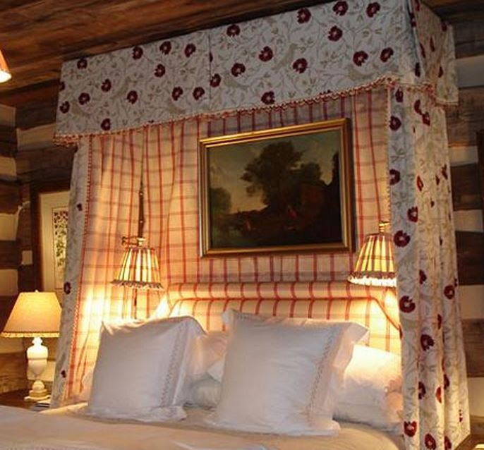
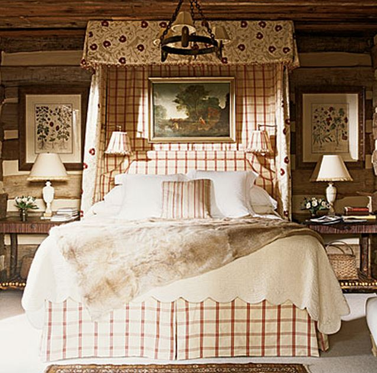

.png)
.PNG)
.PNG)
.PNG)
.PNG)
.PNG)
.JPG)
.JPG)
.PNG)
.PNG)


source
It was cold here this weekend – abnormally cold for the first weekend of November. We had frost, and we haven’t had a frost this early in the season in probably 20 years. When the weatherman predicted snow for the weekend in North Georgia and Western Carolina, my husband said, “We should drive up to Highlands.” I think he was joking. I wouldn’t trust that super curvy road up to the little town with any kind of frozen precipitation, but it did make me want to be there.
It made me want to be in a rustic but cozy room like this one in nearby Cashiers…
source
Or sitting by a fireplace in a beautiful house like this one.
A home that has this wonderful hall…
 gardenandgun.com photo by Brie Williams
gardenandgun.com photo by Brie Williams
Or perhaps this rustic but elegant dining room.
gardenandgun.com photo by Brie Williams
I would have enjoyed wrapping up in a warm blanket and being out on this porch with a cup of hot cocoa. Wouldn’t that have been Heavenly?
And if the weather warmed up some, wouldn’t you enjoy a dinner out on this porch?
All of these special rooms were created by Charleston designer, Kathleen Rivers, and all are located in Cashiers, North Carolina. Mrs. Rivers has been working in design since 1972. She is a queen of bringing rustic sophistication to a space, but she always has comfort and her client’s tastes at the heart of her work. Here she is serving as chairperson of the 2013 Cashiers Designer Showhouse.
Would you like to see more of her work?
🙂
This living room is one of my all time favorites that she has done. I love the subtle mix of patterns and colors, and the room has 2 stories of windows.
And check out the drapes and brown transferware in this cozy dining area. 🙂
As I was doing my research, I learned that she and her husband were the developers of Chattooga Club golf course community outside of Cashiers. Here are a few rooms near Chattooga Club…
(Love this yellow room!)
(I’d love to be sitting beside that fireplace with a fire burning there.)
And that’s all the eye candy of Kathleen River’s work I have for you today. She has been published in Southern Accents, House Beautiful, Garden and Gun, and several others. So perhaps you have seen her wonderful work in print.
And now I am going to go sit by our fireplace and enjoy some hot cocoa! 🙂
Until next time…


.PNG)
It was indeed cold this past weekend in North Carolina, and I would have loved to been in any of these beautiful homes by a big roaring fire. I have to admit, I’m longing for a few more crisp fall days…what a talented designer – would love to see her work in person!
——————————————————————–
It has warmed up here, so I too would like to see more real fall days. And yes, wouldn’t it be great to see some of Kathleen River’s rooms in person- especially those at Chattooga Club?!
Kelly
Ha! I have all these pictures in my files. Obviously love her work and it relates to where I live – a log home in the mountains of North Carolina (not Cashiers, but Asheville). I love it when magazines and blogs feature this style, because it really is a bit of a local vernacular. We had snow this weekend on the mountain – about six inches! It was quite a storm with really fierce winds and was our first hard freeze. So cold weather came in with a bang. Sat by the fire all day. Then it got really warm the next day and the snow melted, and was in the upper 60’s today. Crazy!
———————————————————————
Since I love North Carolina so much, it would be logical that I am drawn to this vernacular style. 6 inches of snow!!! Wow. I know you enjoyed being snug by the fireplace.
Kelly
Pretty, pretty, pretty. Rustic sophistication describes her designs perfectly. I would happily burrow into any one of those rooms!
———————————————————————
Me too! These are really wonderful spaces. I am glad you liked them as well.
Kelly
Kelly,
This is my favorite style of decor—the juxtaposition between rustic and vintage formal makes for the most inviting rooms that appeal to me every time. I will definitely pin Mrs. Rivers images you’ve shared and I’ll have to search out further examples of her work, I love it!
How fun to have a cold weekend. We had one with a smattering of rain and my heart sang all weekend! 🙂
xo,
Karen
———————————————————————
Karen, thank you for pinning the photos. I am glad I could share some spaces with a style you love. You all badly needed some rain, so I am sure you heart did sing! We enjoyed our out of the blue cold here.
Kelly
Oh, Kelly, I’m not usually a fan of log cabins because they tend to be so dark inside but I think you have won me over with this one! It is absolutely beautiful and I could move in today!
——————————————————————-
Log cabins can go in several directions, but the ones that Kathleen Rivers has decorated here are so classic, rustic, and beautiful. I am glad you found them to be rooms you like.
Kelly
Love the work of Kathleen Rivers! With a last name like Rivers, she would have to design tranquil, inviting rooms. They make me wish I was sitting in front of the fire or snuggled in that first bed with the covers up to my ears. Everything is beautiful! Thanks for sharing! Now when shall we see a decorating book by you?!
Take care
Sherry
——————————————————————–
Another Kathleen Rivers fan! Isn’t her work amazing?! So glad you liked it Sherry. A book from me??? 🙂
Kelly
Oh Kelly…these rooms are rustically elegant! I could live in those rooms so easily. Where do you find these designers! Thanks for introducing me to so many new to me designers! 😉
———————————————————————
I think I first saw her rooms in Southern Accents many years ago, and they were so beautiful to me, that I kept them in my memory for a very long time.
Glad you liked them Donnamae!
Kelly
Hi Kelly, I love all the decorators you feature and their rooms. I too love the yellow room . The porches are my favorite though. I want a large screened in porch on my next home but everyone says they are so hard to keep clean. Is it a pain to keep your beautiful porch clean in the spring and summer? It always looks so nice and inviting!
Happy Fall!
Lynne
———————————————————————-
Hi Lynne! That yellow room was so cheery wasn’t it? I treat the porch here just like any other room here…it gets dusted and vacuumed every two weeks. (And I vacuum the upholstery then as well.) I do abandon it for about 3 weeks in the spring when the pollen is in full force, and I can’t keep up with it then. Then I wash all the furniture and vacuum vacuum everything when the pollen stops blanketing it all.
Kelly
Hi Kelly lovely classic decorating.I too love the living room so easy on the eye. Here in Oz at the moment the weather is lovely but we are headed for some unseasonal hot weather for a few days at the end of the week. As always enjoying your posts
Kind Regards
Karen
————————————————————————-
Thank you for reading and leaving your sweet comment Karen! So glad you liked Kathleen River’s style.
Kelly
Wow, Kelly, You sure do introduce us to some of the most interesting people. Love this designer’s work! The buffalo check drapes are beautiful in the dining room.
Take care.
Emily
——————————————————————–
You know I loved those buffalo check dreapes too! Glad you liked it all Emily. 🙂
Kelly
It was Ooh and Aah with this post. I especially loved that small yellow room with the mix of old wood pieces, tapestry rug and black wicker chair. That soft creamy yellow is beautiful. Killer porch of course. I have to say the double story windows and check curtains look all too familiar. Hmmmmm… I can see why you would like her design. Isn’t she just a beautiful gal too. What a “take me away” post! Loved every picture Kelly.
——————————————————————-
I would love to have that yellow room in our house here – especially with that wicker chair! Ha ha on the double story windows. 🙂 So glad you enjoyed the post Debra!
Kelly
Kelly, Love the rustic yet beautiful rooms by Kathleen Rivers. Would love to visit the Cashiers community some day! I had never heard of Garden and Gun magazine until your blog…would be fun to see an issue. The rains have come to the Seattle area…I hope your sons are adjusting well. Thanks for the lovely images…so inspiring!
———————————————————————
Gracia, I hope you do get to make a trip to Cashiers (and nearby Highlands) one day. It is a beautiful area of North Carolina. Garden and Gun seems to be a “Southern” publication from what I have been reading in the comments here. Thank you for the well wishes for our sons. They do seem to be adjusting to living in your area of our country.
Kelly
Truly my vision of rustic but elegant living in the mountains!! Had I been able to go on my trip — I would have been traveling home on those roads in the snow!! And I have never driven in snow!! Just might have had to stay a few more days!! My, my!;) No fireplace here but did have my first hot chocolate over the weekend!! Let the winter begin, I say!! Or maybe Indiana Summer? Putting up white lights tomorrow on my picket fence –but holding off on green garland.
———————————————————————
Whoa Louvina…that would have been very dangerous coming down that road with it snowing. So staying an extra night or two would have been required. 🙂 Can’t believe you have the lights up! (But I bet it looks pretty and festive. 🙂 )
Kelly
Ok, Kelly,
This is some very nice eye candy. Kathleen Rivers really has an eye for rustic elegance. I love her designs. I have also decided that I need a subscription to Garden and Gun magazine now. Thanks for sharing!
—————————————————————–
Yes she does Dawn. I think you would enjoy a subscription to the magazine. It has quite a variety of articles in each issue, and of course I love the ones about houses. 🙂
Kelly